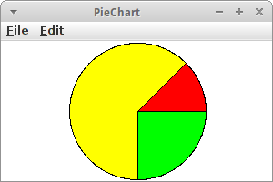

Graphics
Grafikprogramme zu schreiben ist fast so einfach wie Karel Programme. In diesem Kapitel werden wir uns mit unseren ersten Grafikprogrammen beschäftigen. Dabei machen wir auch unsere ersten Schritte in Richtung objekt-orientierter Programmierung.
.
 Grafikmodell
Grafikmodell
Das Grafikmodell das wir verwenden werden ist ganz einfach und erinnert vielleicht an unsere Zeit im Kindergarten, als wir noch mit Filzteilen die tollsten Kunstwerke schufen. Es gibt verschiedene vorgestanzte Formen, man kann aber auch seine eigenen Formen ausschneiden und dann auf einem Filzbrett zu großen Kunstwerken arrangieren.
In unserem 'Filzsortiment' gibt es Rechtecke (GRect), Kreise (GOval), Linien (GLine), Polygone (GPolygon), Bögen (GArc), Bilder (GImage) und Schriften (GLabel). Diese können beliebige Farben und Größen haben und wir können sie an beliebigen Positionen auf unserem Filzbrett anbringen.
.
GraphicsProgram
Unser Grundgerüst, also unser Filzbrett sozusagen, ist das GraphicsProgram. Das ist vom Prinzip her ganz ähnlich zu einem Karel Programm:
import java.awt.Color;
import acm.graphics.*;
import acm.program.GraphicsProgram;
public class House extends GraphicsProgram {
public void run() {
// unser Code...
}
}
Die Imports sehen zwar etwas anders aus, und anstelle von 'extends Karel' steht da jetzt 'extends GraphicsProgram'. Uns interessiert das nach wie vor nicht, und wir schreiben unseren Code wie gehabt in die 'run()' Methode.
.
GRect
Wir beginnen mit Rechtecken, die wir GRect nennen. Ein Rechteck hat eine Breite und Höhe, sowie eine x und y Position. Die folgenden zwei Zeilen zeigen wie das geht:
GRect fritz = new GRect(50, 50); add(fritz, 100, 100);
In der ersten Zeile kreiiren wir ein neues (new) Rechteck, das 50 Pixel breit und 50 Pixel hoch ist. Das Rechteck bekommt auch einen Namen, es heißt 'fritz'. Der Name kann fast beliebig sein, und 'fritz' ist so gut wie jeder andere Name. Das ist in etwa so wie wenn wir uns eines der Filzrechtecke herausgesucht hätten und es noch in Händen halten. Wir müssen es aber noch zu unserem Filzbrett hinzufügen (add), und das machen wir mit der zweiten Zeile: wir fügen 'fritz' an der Position (100,100) zu unserem Filzbrett hinzu.
Das Filzbrett heißt eigentlich Canvas. Es ist normalerweise etwas mehr als 700 Pixel breit und knapp 500 Pixel hoch. Wir können es aber auch größer oder kleiner machen. Ganz wichtig, x geht wie gewohnt von links nach rechts, allerdings y geht von oben nach unten, das mag vielleicht etwas ungewohnt sein.
.
Farben
Das Spielen mit Filzteilen wäre ziemlich langweilig wenn alle Filzteile die gleiche Farbe hätten. Genauso ist es mit Grafikprogrammen. Wenn wir also die Farbe unseres Rechtecks ändern wollen, dann setzen (set) wir seine Farbe mit der folgenden Zeile:
fritz.setColor(Color.BLUE);
In dem Fall wird der Rand von 'fritz' also in blau gezeichnet. Effektiv sagen wir, 'hey fritz, warum setzt du nicht deine Farbe auf blau'. Natürlich versteht 'fritz' nur Englisch (so wie Karel).
Ausgefüllte Rechtecke sind natürlich viel schöner, deswegen können wir 'fritz' noch sagen, dass er doch ausgefüllt sein soll:
fritz.setFilled(true);
Manchmal möchte man, dass die Farbe des Randes eine andere ist als die des Inhaltes. Dafür kennt 'fritz' das setFillColor() Kommando:
fritz.setFillColor(Color.YELLOW);
Jetzt ist 'fritz' ein gelbes, ausgefülltes Rechteck mit blauem Rand.
.
Mehrere Rechtecke
Das Spielen mit Filzteilen wäre auch langweilig wenn es nur ein Filzteilchen gäbe. Wir können beliebig viele andere Rechtecke hinzufügen. Wir müssen nur darauf achten, dass jedes neue Rechteck einen anderen Namen hat:
GRect lisa = new GRect(30, 100); lisa.setColor(Color.MAGENTA); lisa.setFilled(true); lisa.setFillColor(Color.CYAN); add(lisa, 70, 50);
Wenn wir diese Zeilen zu unserem Programm oben hinzufügen, dann sehen wir zwei Rechtecke, 'fritz' und 'lisa'.
.
Nachrichten
Nachrichten, Methoden, Kommandos: verschiedene Namen für das gleiche Konzept. Bei Karel hießen die move() und turnLeft(), jetzt heißen sie setColor() und setFilled(). Wir können unsere eigenen schreiben, wie moveToWall(), oder bereits exisitierende verwenden. Bei Karel war es etwas einfacher, weil es gab nur einen Karel. Jetzt wird es ein klein wenig komplizierter, denn es kann ja mehr als nur ein Rechteck geben. Deswegen müssen wir immer sagen für wen denn die Nachricht vorgesehen ist, also
fritz.setColor(Color.BLUE);
ändert die Farbe von 'fritz', aber
lisa.setColor(Color.BLUE);
ändert die Farbe von 'lisa'. Also im ersten Fall senden wir die Nachricht an 'fritz', im zweiten an 'lisa'. Welche Nachricht senden wir? Die 'setColor()' Nachricht. Alternativ sagen wir auch, wir rufen die Methode 'setColor()' von 'fritz' auf, oder wir lassen 'fritz' das 'setColor()' Kommando ausführen.
.
Übung: Flag
Karel wollte schon immer mal verreisen. Um ihn auf seinen großen Trip einzustimmen wollen wir ein GraphicsProgramm schreiben, dass die Flagge des Landes zeichnet in das er gerne reisen würde. (Allerdings mag Karel nur Länder mit einfachen Flaggen!)
.
.
GOval
Wenn wir Kreise oder Ellipsen zeichnen wollen dann verwenden wir GOval. GOval hat wie ein Rechteck eine Breite und Höhe, und die Ellipse wird sozusagen von diesem Rechteck eingefasst. Ansonsten hat ein GOval die gleichen Methoden wie ein GRect. Auch der Syntax ist identisch:
GOval innerRing = new GOval(20, 20); innerRing.setColor(Color.RED); innerRing.setFilled(true); add(innerRing, 125, 125);
.
GLine
Um Linien zu zeichnen gibt es die Klasse GLine. Man gibt die x und y Koordinaten der beiden Endpunkte, die dann durch eine Linie miteinander verbunden werden.
GLine leftRoof = new GLine(100, 150, 125, 125); add(leftRoof);
Linien können auch farbig sein. Leider kann man die Dicke von Linien nicht verändern, aber man könnte ja mehrere nebeneinander zeichnen.
.
Übung: Haus mit Baum
Inzwischen haben wir genügend Grafikkenntnisse um uns an unserem ersten Kunstwerk zu versuchen. Es soll aus einem Baum, einem Haus mit Dach und einer Sonne bestehen. Dafür verwenden wir GOvals, GRects und GLines.
.
.
GImage
Wirklich praktisch ist die Klasse GImage. Mit ihr können wir Bilder zu unserem Canvas hinzufügen:
GImage om = new GImage("ohm-logo.gif");
om.scale(2);
add(om, 50, 50);
U.a. werden die Formate gif, jpg und png unterstützt, Bilder können auch skaliert werden mit der scale() Methode.
.
GLabel
Ab und zu benötigen wir auch Text in unseren Grafiken, dann kommt der GLabel ganz gelegen. Er is ähnlich einfach zu benutzen wie die anderen Grafikobjekte:
GLabel hans = new GLabel("Hello World!");
hans.setFont("SansSerif-36");
add(hans, 50, 100);
Bei Labels können wir neben der Farbe natürlich auch den Font ändern. Die Zahl gibt die Fontgröße an. Wenn man möchte kann man auch einen kursiven (italic) oder fetten (bold) Font verwenden:
hans.setFont("SansSerif-italic-36");
Etwas vorsichtig muß man bei der Positionierung sein: die bezieht sich nämlich nicht wie sonst üblich auf die linke obere Ecke, sondern auf die Baseline.
.
Übung: HelloWorld
Als kleine Übung schreiben wir unser erstes 'Hello World' Programm. Einfach die Zeilen oben in die run() Methode eines GraphicsPrograms einfügen und ausführen.
.
.
GArc
GArc zeichnet einen Bogen, also einen Teil eines Kreises oder einer Ellipse. Da aber nur ein Teil des Kreises gezeichnet wird, müssen wir neben der Breite und Höhe der Ellipse auch noch angeben, wo der Bogen beginnen soll und wie lange er gehen soll. Beides wird in Grad angegeben.
GArc archie = new GArc(50, 50, 0, 45); add(archie, 50, 50);
Die obigen Zeilen zeichnen einen Bogen, der bei 0 Grad beginnt und gegen den Uhrzeigersinn 45 Grad umspannt.
In den Projekten werden wir sehen, wie vielseitig Bögen sind und wo sie überall Verwendung finden.
.
Übung: PacMan
Eine erste praktische Anwendung für einen Bogen ist PacMan. Es ist einfach ein ausgefüllter GArc, der bei 45 Grad beginnt und einen Bogen von 270 Grad umspannt.
.
.
GPolygon
GPolygon ist die letzte Grafikklasse die wir noch lernen müssen. Ein Polygon besteht aus Punkten, die man auch Vertices nennt. Mit addVertex() fügt man einfach einen Punkt nach dem anderen hinzu. Das Polygon weiß dann selbst wie es die Punkte verbinden muss. Polygone sind immer geschlossen, deswegen kann man sie auch ausfüllen wenn man will.
GPolygon diamond = new GPolygon(); diamond.addVertex(0, 0); diamond.addVertex(50, 50); diamond.addVertex(100, 0); diamond.addVertex(50, -50); add(diamond, 50, 50);
.
Fenstergröße ändern
Manchmal möchten wir die Größe unseres Fensters ändern. Das geht ganz einfach mit der Zeile
setSize(300, 200);
die am Anfang der run() Methode stehen sollte.
.
Objektorientierung
Obwohl wir das bisher noch nicht explizit erwähnt haben, haben wir bereits Objekte und Klassen benutzt. Denn fritz, lisa, hans und archie sind Objekte, und GRect, GOval, GLabel usw. sind Klassen. Anfangs ist es nicht immer leicht die beiden zu unterscheiden, aber eigentlich ist es gar nicht so schwer:
- Man sagt z.B. 'fritz ist ein GRect' oder 'archie ist ein GArc'. Man sagt aber nie 'GRect ist ein fritz'.
- Von Objekten kann es mehrere geben, z.B. gibt es einen fritz und eine lisa (beides sind GRects), aber es gibt nur ein GRect.
Um das auch im Code klar zu machen, fangen die Namen von Objekten immer mit Kleinbuchstaben an, während Namen von Klassen immer mit Großbuchstaben beginnen.
SEP: Objekte fangen mit Kleinbuchstaben an, Klassen mit Großbuchstaben.
.
Review
Was haben wir in diesem Kapitel gelernt? Wir haben
- unser erstes GraphicsProgram erstellt
- die Klassen GRect, GOval, GLine, GImage, GLabel, GArc und GPolygon kennengelernt
- gesehen wie wir Objekten Farbe geben können
- gehört, dass Nachrichten, Methoden und Kommandos dasselbe sind und
- gelernt mehrere Objekte zu benutzen.
Das wichtigste aber in diesem Kapitel war, dass wir erste Schritte in der Objektorientierung unternommen haben.
.
Projekte
Mit dem was wir in diesem Kapitel gelernt haben, können wir bereits sehr interessante Grafikprojekte realisieren. In dem Buch von Eric Roberts [3] gibt es noch viel mehr Beispiele.
.
Skyscraper
Karel liebt Chicago, und Chicago ist voller Hochhäuser. Wir wollen also für Karel ein Hochhaus bei Nacht zeichnen. Es besteht einfach aus ein paar GRects. Mit der folgenden Zeile
setBackground(Color.DARK_GRAY);
kann man ganz einfach die Hintergrundfarbe auf dunkelgrau setzen. Wenn man möchte kann man hier eine Methode einführen die drawWindows() heißt, und die für das Zeichnen der Fenster verantwortlich ist.
.
 Wall
Wall
Als nächstes wollen wir eine Mauer bestehend aus 15 Backsteinen (GRect) errichten. Im Moment ist das noch etwas mühselig, später werden wir sehen, dass es auch einfacher geht.
.
.
.
 Archery
Archery
Karel geht ab und zu gerne zum Bogenschießen (erinnern wir uns an RobinHoodKarel). Dafür braucht er aber eine Zielscheibe. Diese besteht aus einem inneren roten Ring mit 20 Pixel Durchmesser, einem mittleren weißen Ring mit 40 Pixel Durchmesser und einem äusseren roten Ring mit 60 Pixel Druchmesser. Auch hier kann man wieder mit Methoden arbeiten, damit der Code lesbarer wird (unser erstes SEP), und zwar drawInnerRing(), drawMiddleRing() und drawOuterRing().
.
OlympicGames
Bogenschießen ist ja seit 1972 wieder olympische Disziplin, und deswegen hat Karel vor, sich für die nächsten olympischen Spiele zu qualifizieren. Dafür muss er noch viel üben, aber in der Zwischenzeit zeichnen wir schon einmal die olympischen Ringe für ihn.
Es gibt mehrere Ansätze das Problem zu lösen.
- Der erste ist nur die Ränder der GOval zu malen, also zu sagen setFilled(false). Dann sind die Ringe aber sehr dünn und schauen nicht ganz richtig aus.
- Der zweite Ansatz ist je zwei GOvals zu malen, eines etwas größer mit der Farbe und das zweite zentriert darüber mit weißer Farbe. Allerdings werden dann Teile der oberen Ringe komplett überdeckt.
- Schließlich kann man mehrere Ringe (z.B. fünf) mit Randdicke eins (also wie im ersten Versuch) übereinander malen. Das sieht dann so aus wie in der Grafik hier.
Allerdings ist das immer noch nicht perfekt wenn wir uns das Original ansehen, z.B. in der Wikipedia [7].
.
PieChart
Eine schöne Anwendung für GArcs sind Kuchendiagramme (piecharts). In diesem kleinen Projekt wollen wir ein einfaches Kuchendiagram erstellen, es besteht aus drei GArcs.
.
.
.
Smiley
Später benötigen wir ein Smiley. Ein Smiley setzt sich aus einem GOval für das Gesicht, je einem GOval für das linke und das rechte Auge und einem GArc für den Mund. Wenn man kompliziertere Grafiken zeichnet, macht es immer Sinn sich das Design erst einmal auf einem Stück Papier aufzuzeichnen, damit man die Übersicht behält. Man kann dann in der Regel auch ganz einfach die Koordinaten ablesen.
Auch beim Smiley Programm macht es wieder Sinn Methoden zu verwenden, damit der Code besser lesbar ist. Z.B. könnten die Methoden drawFace(), drawLeftEye(), drawRightEye() und drawMouth() heißen.
.
 Hexagon
Hexagon
Um uns ein bischen mit der GPolygon Klasse vertraut zu machen, zeichnen wir ein Hexagon, also ein Sechseck. Sechsecke sind cool, weil die erinnern Karel immer an Bienen, und die machen Karel's Lieblingsessen: Honig.
.
.
SpaceShip
In Kapitel sieben wollen wir u.a. den Klassiker Asteroids programmieren. Dafür benötigen wir ein Raumschiff. Sowohl für das Raumschiff, als auch für die Asteroiden eignet sich das GPolygon. In dieser Übung wollen wir also ein Raumschiff aus einem Polygon konstruieren.
.
.
 TrafficLight
TrafficLight
Eine Ampel besteht aus einem schwarzen Rechteck und aus drei farbigen Kreisen. Das läst sich ganz einfach aus einem GRect und drei GOvals konstruieren. Später werden wir die Ampel noch animieren.
.
.
.
Heart
Karel möchte gern für seine große Liebe ein Herz zeichnen. Dazu benötigen wir zwei rote GOvals und ein rotes GPolygon. Natürlich sollten die ausgefüllt sein, sonst sieht man ja wie es konstruiert wurde.
.
.
 CarSymbol
CarSymbol
Karel liebt Autos, und natürlich ist Mercedes sein Lieblingsauto. In diesem Projekt wollen wir für unser Lieblingsauto (nicht notwendigerweise Mercedes) ein Logo mithilfe von Grafikobjekten erstellen. Das Mercedes Beispiel besteht aus GOvals und GPolygons.
.
.
YinYang
Karel ist fasziniert von Philosophie. Vor ein paar Tagen hat er über Yin and Yang in der Wikipedia gelesen [6]:
"Das höchste Yin ist kalt, das höchste Yang heiß.
Kälte entspringt aus dem Himmel, Hitze strömt aus der Erde.
Wenn beide einander durchdringen und dabei eine Harmonie erzielen,
dann entstehen daraus alle Dinge."
Wir können das YinYang Symbol mithilfe von GOvals und GArcs zeichnen.
.
Piano
Natürlich liebt Karel Musik. Und in seiner Freizeit klimpert er immer vor sich hin. Deswegen zeichnen wir eine Klaviatur für ihn, bestehend aus acht weißen und fünf schwarzen Tasten (GRects). Spätestens in Kapitel sieben wird unser Klavier auch Musik machen...
.
.
SevenSegmentDisplay
Die Siebensegmentanzeige kommt vor allem in Digitaluhren zum Einsatz um Ziffern anzuzeigen. Die Ziffern werden aus sieben einzelnen "Strichen", auch Segmente genannt, zusammensetzt [8]. Wir können ein Siebensegmentanzeige aus sieben roten Rechtecken erstellen. Später werden wir der Siebensegmentanzeige auch noch Leben einhauchen.
.
Fragen
-
Mit welcher der Grafik Klassen würden Sie einen Stern zeichnen?
-
In dem folgenden Code, ist 'fritz' ein Objekt oder eine Klasse?
GRect fritz = new GRect(50,50);
-
Was ist der Unterschied zwischen setColor() und setFillColor()?
-
Was sind Nachrichten, wozu dienen diese?
-
Nennen Sie fünf Grafik Klassen die Sie dieses Semester gelernt haben.
-
Was steckt in der acm.jar Datei?
-
Nennen Sie drei Klassen die im 'acm.graphics' Paket zu finden sind.
-
Schreiben Sie Code, der das folgenden Rechteck mit grüner Farbe ausfüllt.
GRect fritz = new GRect(50,50);
-
Was ist ein GPolygon? Geben Sie ein Beispiel für seine Anwendung.
- Zeichnen Sie das Audi Logo mittels GOvals.
.
Referenzen
Details zur ACM Grafik Bibliothek kann man auf den Seiten der ACM Java Task Force [1] finden. Dort findet sich auch ein schönes Tutorial, das diese vorstellt [2]. Das Buch von Eric Roberts (der auch hinter der Java Task Force steckt) ist ein Klassiker und eine wahre Schatztruhe, voller Beispiele und tiefen Einsichten. Auch in diesem Kapitel sind viele der Beispiele von seinem Buch und der Stanford Vorlesung 'Programming Methodologies' inspiriert [4].
[1] ACM Java Task Force, cs.stanford.edu/people/eroberts/jtf/
[2] ACM Java Task ForceTutorial , cs.stanford.edu/people/eroberts/jtf/tutorial/index.html
[3] The Art and Science of Java, von Eric Roberts, Addison-Wesley, 2008
[4] CS106A - Programming Methodology - Stanford University, https://see.stanford.edu/Course/CS106A
[5] Filz, http://www.desertblossomlearning.com/store/feltstories/images/1047-shapes.jpg
{kind=link}
[6] Seite „Yin und Yang“. In: Wikipedia, Die freie Enzyklopädie. URL: https://de.wikipedia.org/w/index.php?title=Yin_und_Yang&oldid=149503099
[7] Seite „Olympic symbols“. In: Wikipedia, Die freie Enzyklopädie. URL: https://en.wikipedia.org/wiki/Olympic_symbols
[8] Segmentanzeige, https://de.wikipedia.org/wiki/Segmentanzeige
.